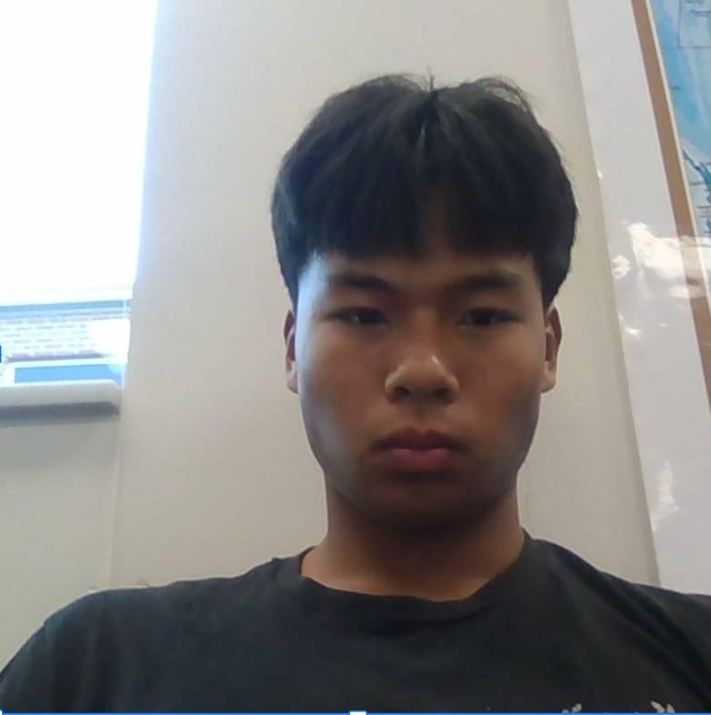

Getting to Know Me
Hi, I am Filemon Sang
I am a junior at Southport High School with strong interests in mathematics, computer science, robotics, and personal growth. My goal is to attend an out-of-state university and pursue higher education in math and technology fields.
Learn More
About Me
Hello, my name is Filemon Sang. I'm an ambitious and hardworking student at Southport High School. In the future, I plan on attending an out-of-state university to pursue higher education in mathematics and computer science.
I was not always interested in these fields, but over time I began developing a passion for learning and improving myself. Outside of academics, I enjoy playing soccer and basketball, spending time with friends, watching anime, and baking.
Skills
Technical Skills
Learning programming languages, robotics programming, mathematical problem solving, and computer science fundamentals. Preparing for the AMC 12 mathematics competition to qualify for AIME.
Soft Skills
Leadership, discipline, teamwork, communication, persistence, adaptability, and problem solving.
Interests & Tools
Robotics, coding, mathematics, baking, sports, Google Workspace, and technology learning platforms.
Experience & Activities
Leadership & Organizations
- President of Key Club
- Member of National Honor Society (NHS)
- Former Robotics Team Member
- Future DECA Participant
I stepped away from robotics temporarily in order to save money for a better PC setup that would allow me to improve my skills independently at home. I plan on rejoining robotics with stronger technical abilities and more experience.
Achievements
- 4.4 GPA
- Marion County Principals Award Recipient
- Recognized in the top 3% of my class
Future Goals
My overall goal is continuous improvement. I believe that growth comes from learning from mistakes and focusing on the future instead of dwelling on the past.
I want to continue strengthening my abilities in mathematics, programming, robotics, and leadership while preparing for college and future career opportunities in STEM fields.
Contact
Thank you for visiting my portfolio.